La carta
Añade lo que te apetezca y envíanos el pedido por WhatsApp. Lo tendrás listo para recoger en C/ Josep Carner 4.
Alérgenos y sin gluten
Cada plato indica sus alérgenos. «Sin gluten» son platos sin gluten en la receta, pero en la cocina usamos harina de trigo y puede haber trazas: si eres celíaco o tienes una alergia, dínoslo al pedir.
Pizzas
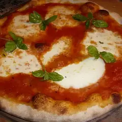
Margherita
12 €Tomate, mozzarella, aceitunas
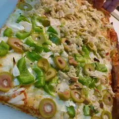
Atún
12 €Tomate, atún, mozzarella, aceitunas
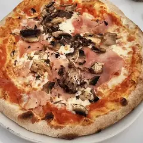
Jamón Cocido
12 €Tomate, jamón cocido, mozzarella, aceitunas
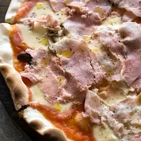
Royale
13 €Tomate, jamón cocido, champiñones, mozzarella, aceitunas
Gorgonzola
12 €Tomate o nata, gorgonzola, mozzarella, aceitunas
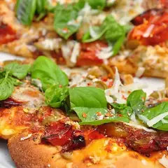
Queso de Cabra
12 €Tomate o nata, queso de cabra, mozzarella, aceitunas
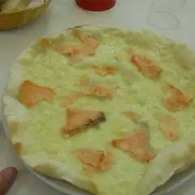
Noruega
13 €Nata, salmón, limón, mozzarella, aceitunas
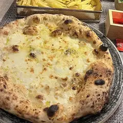
Bergère
13 €Tomate o nata, gorgonzola, queso de cabra, mozzarella, aceitunas
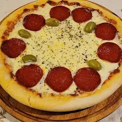
Catalana
12 €Tomate, chorizo, mozzarella, aceitunas
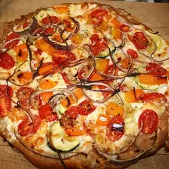
Vegetariana
13 €Tomate, pimientos, champiñones, berenjenas, cebolla, mozzarella, aceitunas
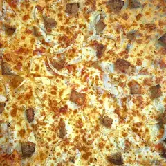
Burger
14 €Tomate, carne picada, cheddar, mozzarella, salsa burger, aceitunas
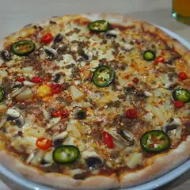
Armenia
14 €Tomate, carne picada, pimientos, cebolla, mozzarella, aceitunas
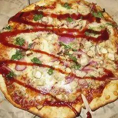
Barbacoa
14 €Tomate, carne picada o pollo, pimientos, cebolla, mozzarella, aceitunas, salsa barbacoa
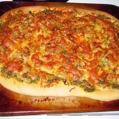
Pesto
14 €Pesto, jamón curado, rúcula, tomates frescos
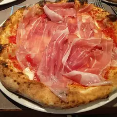
La Top
14 €Tomate, jamón curado, lascas de parmesano, mozzarella, aceitunas
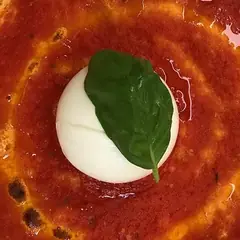
Burrata
14 €Tomate, jamón curado, burrata, mozzarella, aceitunas
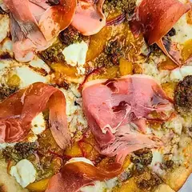
Seguin
14 €Nata, queso de cabra, miel, jamón curado, mozzarella, aceitunas
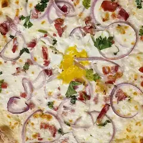
Carbonara
14 €Nata, bacon, cebolla, mozzarella, aceitunas, huevo
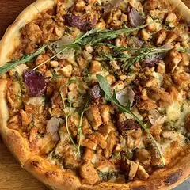
Pollo Curry
14 €Nata, pollo, pimientos, mozzarella, aceitunas, salsa curry
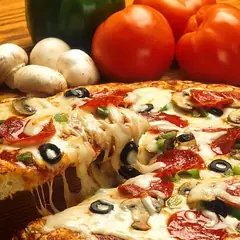
Española
14 €Tomate, chorizo, pimientos, mozzarella, aceitunas
Especialidades
Panuzzo
7 €Sándwich de masa de pizza relleno de rúcula, aceite de oliva, burrata, tomates frescos y jamón cocido o curado.
Baguette Pizza
7 €Tu pizza favorita en forma de baguette.
Pipo
13 €Tu pizza favorita enrollada en forma de croissant.
Calzone
13 €Tu pizza favorita cerrada en forma de empanada.
Pasta fresca
Pasta fresca casera
13 €
Elige la pasta y la salsa. Si quieres, te la servimos dentro de un bol de masa de pizza.
Ensaladas
Ensalada César de pollo
11 €Lechuga, pollo frito, tomates, cebolla frita, lascas de parmesano y picatostes.
La Italiana
11 €Tomates frescos y burrata.
Tapas
Todas las tapas a 7,50 €.
Croquetas del momento
7,50 €Patatas bravas
7,50 €Calamares a la romana
7,50 €Alitas de pollo
7,50 €
Postres
Postres caseros del momento, preparados con producto fresco. Pregúntanos qué hay hoy.